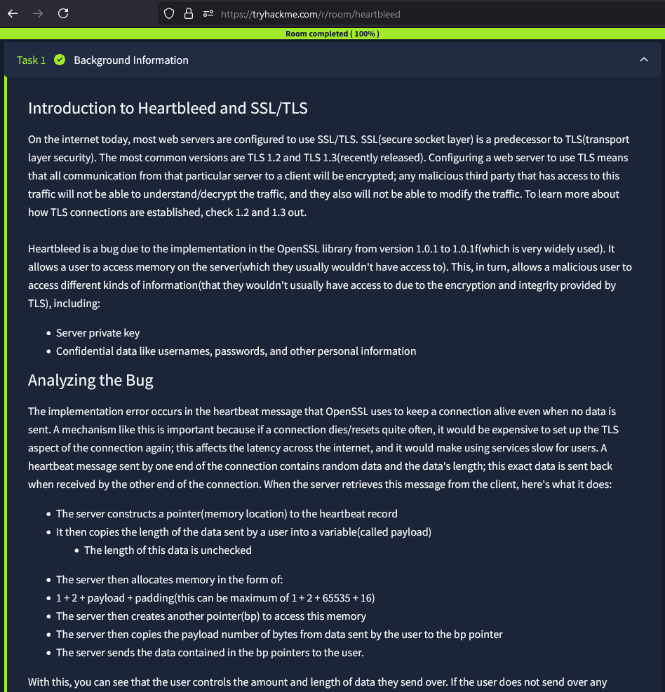
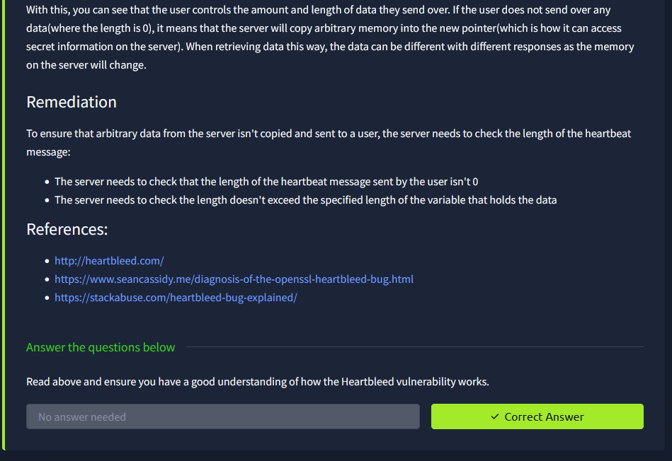
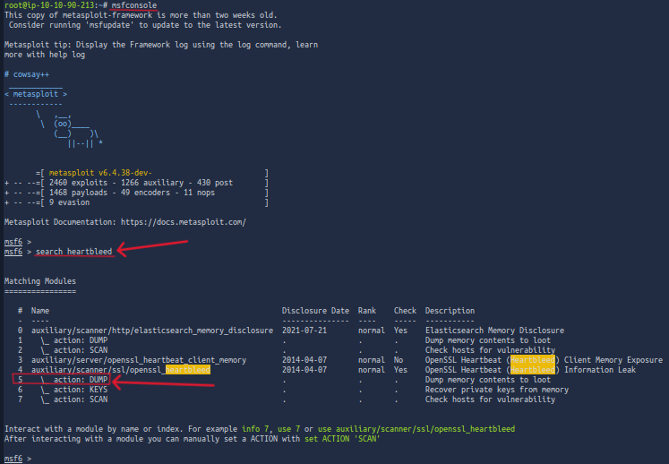
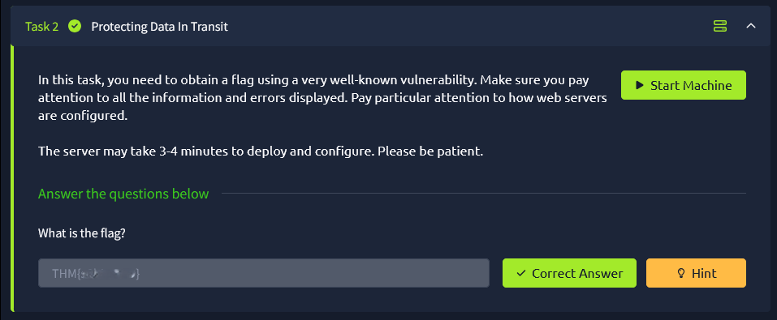

HeartBleed Walkthough
Try Hack Me Link: https://tryhackme.com/r/room/heartbleed
Completed: 2024-12-27
*Formatting warning! If you are new and are following along I put things that need to be replaced with your information in such format. [replace me!] Anything within them needs to be replaced and the []'s do not get put in the command!*
Intro
Hello! This is my very first writeup! Today I will be walking you through how I solved the HeartBleed room. If you want to get to know more about me, feel free to go to the About Me section of the page!
Room
So at the beginning of the room we are told briefly about SSL/TLS, which is used everywhere more or less being an encrypting wrapper for traffic of any sort. Then it talks more about the HeartBleed bug itself, if you are interested I left the room intro below so feel free to read through!
 Enumerating
Let's start with a Nmap scan of the IP with just the --scripts vuln flags. I did this because it will scan all top 1000 ports and run vulnerability scanning scripts on them to let us know if there are any easily identified vulnerable ports without needing to do Google Foo to find vulnerabilities with the service versions. Most of the time it should flat-out say if it's vulnerable and what the well-known vulnerability is.
nmap [ip] --script vuln
Great after running the script it looks like there are a few results that catch my eye. Right away I saw that port 443, meaning this server is an HTTPS server. It is the one that came out with the most successful vulnerabilities identified. If we look through the data we can see it says the Heartbleed bug! Nmap also provided some additional data, it says it's vulnerable and the risk factor is high, which is not good. If the risk factor is high it is very likely that it's easy to exploit and it won't be difficult for any attacker. Meaning we, us the attackers are going to have a very easy exploit!
Exploitation
Right away let's see if Metasploit has a nice easy to use automated exploit for us!
If we boot up metasploit, msfconfig we can search for Heartbleed, search heartbleed. Since it's an old exploit there will most likely be a nice premade battle-tested module.
And I was right, it looks like there are a few auxiliary modules, and it comes with a dump option to dump the server's memory. *side note auxiliary modules are not used for exploitation but rather perform tasks like scanning, enumeration, sniffing DoS, and of course in this case that means dumping data.
We can select the module by runing use 5. Then to view the options that have to be set we can run options anything that says yes under required is required so let's fill in that info. Everything should be set by default and you should only need to put in the IP address we can do that by running set RHOSTS [IP], we can run options again and make sure everything is set as it should be. Then we can run run or exploit if we want to be Mr. Hacker hacked into the mainframe cool man.
Finding The Flag!
It looks like it ran successfully, and our file has been stored in /root/.msf4/loot/20241227180430_default_3.254.200.174_openssl.heartble_878837.bin we could just cat out the file and scroll through and find the flag, and we do see it right away. But what if it was a situation where there's a lot of data and we have a lot of scrolling to do, we could easily miss it!
So let's use grep to find things in the file! We can send all the data to a text file so Grep won't yell at us. We can do that by running cat /root/.msf4/loot/20241227180430_default_3.254.200.174_openssl.heartble_878837.bin > [name it anything].text, then we can run the cat command again followed by piping grep, but we must include the -a flag telling grep to treat the binary file as a text file. We can run cat [file name].text | grep -a "THM{" I included what happens when we don't run the -a command to show what we, in fact, did need the -a flag.
And finally we paste in our flag!
Congratulations we have completed the Try Hack Me Heartbleed room, and I hope you enjoyed my first Walkthrough!